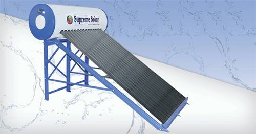
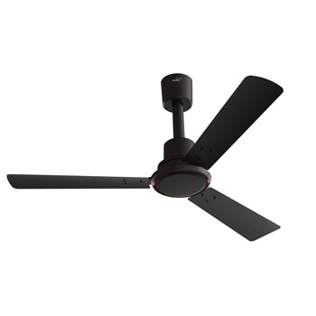

SOLAR WATER HEATER
All our water heating systems come with world-class technology of PUF insulated High-Grade steel for inner tanks and external tanks are powder coated/Stainless steel which increases the lifespan and durability of the solar heaters.
ELECTRIC GEYSERS

Supreme Power Water Heaters today are known for high-quality energy-efficient products. Going forward with this commitment it has introduced state of the art New Generation Electric Water Heaters. Enameled heating
FAN
Mechanically, a fan can be any revolving vane, or vanes used for producing currents of air. Fans produce air flows with high volume and low pressure (although higher than ambient pressure), as opposed to compressors which produce high pressures at a comparatively low volume. A fan blade will often rotate when exposed to an air-fluid stream, and devices.